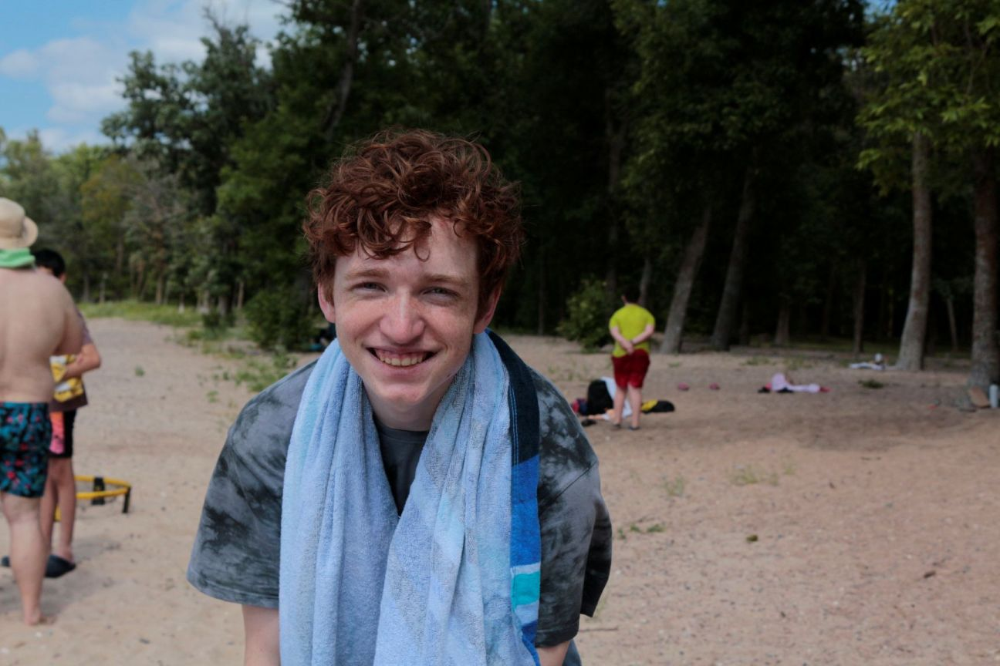

Miles Wendler | WDD130
I love coding! I love music! I love guitar! I have two dads, eight brothers, two sisters, one mom and a small house I am a dual citizen. I was born in Orem, Utah. I have moved 13 times in my life and have lived in places such as RidgeCrest,California - Wetaskiwin,Alberta - Steinbach,Manitoba - TriCities,Washington
